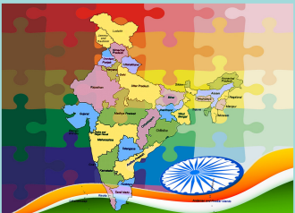
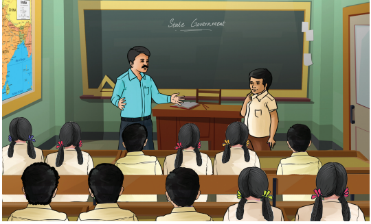
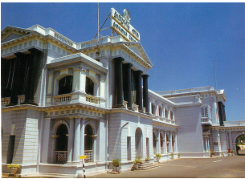
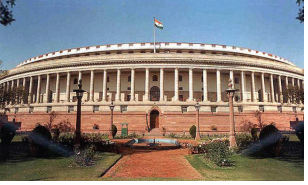
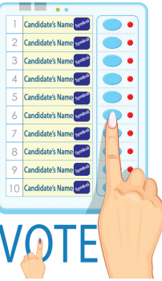
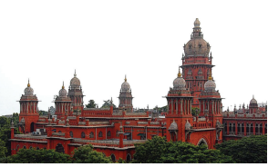
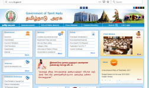

Recognise the difference between Parliament and State Legislature
Understand the election procedures
Know the powers and functions of Governor and Chief Minister
Wonder how the Government works
Identify the three main organs of the government the legislative, executive, and judiciary

Teacher, Good Morning my dear students.
Students, Good morning teacher / sir.
Teacher, (after taking attendance) All are present today. Very good. Coming Monday we have a function in our school. All Should be present on that day without fail.
Yogitha, Do we have any cultural programme?
Teacher, Yes. We are going to open the new building of our school.
Students, Yeah! We are going to a new class room!
Muthu, Who will be the Chief guest? Teacher: We have invited our MLA as the chief guest for the opening ceremony.
Rahim, MLA. I have heard. But I don’t know who is he?
Teacher, MLAs are representatives of the people. He is one among us. He is the Member of Legislative Assembly.
Saran, What is Legislative Assembly? Will you explain in detail?
Teacher, Sure. (showing pictures of fort Saint George, Assembly session, Chief Minister and other ministers)
Meena, What is that building? Where is it? It looks like a fort.

Teacher, Yes. You are correct. It is a fort in Chennai. First English fortress in India. The fort currently houses the Tamil Nadu legislative assembly and Secretariat of Tamilnadu.
Legislative Assembly has the lower house where all the MLAs meet to discuss various matters related to the welfare of the state.
Kayal, Who will be there in that Legislative Assembly?
Teacher, Listen! India has separate system of administration for the Union, States and Union territories. Do you know how many states and union territories are there in India?
Ravi, Shall I tell? 28 states and 8 union territories including our capital territory Delhi? Am I right teacher?
Teacher, Exactly. As I said already power is divided between two sets of governments one at the central in Delhi and separate governments for all the states. This is called as federal system.

India is a Parliamentary democratic republic where the President of India is the Head of Indian Union and the Prime Minister and all the Ministers are responsible for smooth running of the government. This is called central government.
Nila, Do we have a separate government for states?
Teacher, Yes. All the states and union territories have separate governments to run its own administration. Governor, Chief Minister and all the ministers constitute the Government. The member of the Parliament is called MP whereas the member of the Legislative Assembly is called MLA. Both the Central and State Governments work according to our constitution.
John, Oh! Is MLA going to inaugurate the function? Who appoints him?
Teacher, No my child. MLAs are not appointed. They are elected by the people through general election. In the previous lesson we have studied about the political parties. Do you remember? These political parties play a vital role in election. For election, the entire state is divided into several constituencies on the basis of the population. Political parties nominate their candidates to each constituency. All the people residing in that constituency who has completed 18 years of age cast their vote. The candidate who gets the more number of votes is declared as elected and becomes MLA. The Election Commission of India conducts and monitors the elections. After the election the party which gets the more number of MLAs is declared as the majority party. The Governor calls the leader of the majority party to form the state government. In simple words a party whose MLAs has won more than half the number of constituencies in the state are called ruling party and forms the government. And the party which gets the total number of seats next to the majority party, acts as an opposition party in the legislature. But all the MLAs of other political parties who do not belong to the ruling party are called opposition party.

Shanmi, It’s very interesting to hear. Who are all included in the State Government? Teacher: The Governor, the Chief Minister, Council of Ministers. The Governor is appointed by the president of India for the term of five years. The leader of the majority party is appointed as the Chief Minister by the Governor. The Chief minister in consultation with the Governor, constitutes a cabinet which includes members of his party as ministers. The term of the office is five years.
Laya, Teacher! Shall I become the Governor? Or Chief Minister?
Teacher,
Why not? My child! That is very simple. To become a Governor, you
should be the citizen of India and should have completed 35 years of age and should have sound mind. And should not hold any public office of profit.
To become a Chief Minister, you should have completed 25 years of age and should be an MLA or in case of an MLC should have completed 30 years of age.
Arya, Who is an MLC? I never heard.
Teacher Usually a state Legislature has two houses. Upper House and Lower House. This is called Bi-cameral Legislature. Upper House is called Legislative Council. The members are called MLCs and they are not elected directly by the people. The Lower House is called Legislative Assembly. The members are called MLAs. As I said earlier they are directly elected by the people. In India some of the states have two houses in their state legislature. But in Tamil Nadu we have Lower House only. This is called unicameral Legislature.
Ammar, Oh! Now can you please tell me the powers and functions of Governor and Chief Minister? Teacher Sure. The Governor is an integral part of the State Legislature. Governor is the head of the state executive and he has enormous powers. All the administration is carried on in his name. He is the chancellor of Government universities in the state. All bills become law only after his assent. He appoints important officials of the state government such as advocate General, Chairman and members of State Public Service Commission, State Election Commissioner, Vice chancellors of state universities etc. The Chief Minister is the real executive head of the state administration. He allocates the portfolios among the ministers. The Council of Ministers are collectively responsible to the State Legislature. All the ministers work as a team under the Chief Minister. The Chief Minister formulates programmes and policies for the welfare of the people of the state. The council of Ministers is collectively responsible to the Legislative Assembly of the state. The three main organs of government are the legislative, executive and judiciary. The legislative branch makes laws, the executive branch enforces the laws, and the judiciary interprets the laws.
Nandhu, Judiciary. Are you saying about the courts teacher?
Teacher, Yes. The High courts are the highest judicial organ at the State level. It is an independent
body. As per the constitution there shall be a High Court in each state. The state high court consists of a Chief Justice and other judges. The number of Judges in the high court is not uniform and fixed. President appoints the Chief Justice and can hold the office until he completes the age of 62 years. Apart from High court there are district courts and tribunals. They ensure justice to the people without any bias. Apart from this, Family Courts are established to settle the disputes relating to marriages and family affairs. Lok Adalat (people’s court) also have been established by the Government of India to settle dispute through conciliation and compromise.

Children, This topic is very interesting to hear. Thank you very much teacher.
Teacher, Thank you children. A cultural programme is being allotted to our class for the inaugural function. So let us think. We have to practice and perform well.
Summary
India is divided into 28 states and 8 Union territories. Each state has a legislative assembly.
State executive comprises the Governor and the Chief Minister with his Council of Ministers.
The head of the state is the Governor. And he is appointed by the President for a period of five years. He is an integral part of the State Legislature.
The real executive power in a state in India vests with the Chief Minister. The leader of the majority party is appointed as Chief Minister.
The Chief Minister and the Council of Ministers are collectively responsible to the State Legislature.
The High courts are the highest judicial organ at the state level. State High courts have jurisdiction over the whole state.
1 |
Legislative |
law making body |
சட்டமன்றம் |
2 |
Cabinet |
the committee of senior ministers |
மந்திரிசபை |
3 |
Executive |
administrative |
நிர்வாகம் சார்ந்த |
4 |
Judiciary |
a system of courts of law |
நீதித்துறை
|
1 . What is the minimum age for becoming a member of the State Legislative Council ?
a. 18 years
b. 21 years
c. 25 years
d. 30 years
2 . How many states does India have ?
A. 26
b. 27
c. 28
d. 29
3 . The word State government refers to
a . Government departments in the states
b . Legislative Assembly
c . both a and b
d . none of the above
4 . The overall head of the government in the state is the DASH .
a . President
b . Prime Minister
c . Governor
d . Chief Minister
5 . Who appoints the Chief Minister and other Ministers ?
a . President
b . Prime Minister
c . Governor
d . Election Commissioner
6 . who becomes the Chief Minister ?
a . Leader of the Majority party
b . Leader of the opposition party
c . Both
d . None
7 . what are the three branches of the state government ?
a . Mayor governor, M L A
b . Panchayat, municipality, corporation
c . Village, City, State
d . Legislative, executive and judiciary
1. The Governor is appointed by the DASH
2. The leader of the majority party is appointed as DASH in the state assembly.
3. DASH is the highest judicial organ of the state.
4. M L A stands for DASH .
5. DASH is a particular area form where all the voters living there choose their representatives.
6. The elected representatives who are not the member of ruling party are called DASH .
M L A s |
Secretariat |
Governor |
8 |
Chief Minister |
Head of the state |
Union territories |
Legislative Assembly |
Fort saint George |
leader of the Majority party |
1. Which of the following statement is/are not correct?
To become a governor, one
a . should be the citizen of India
b . should have completed 25 years of age
c . should have sound mind
d . should not hold any office of profit
1 . a and b
2 . c and d
3 . a
4 . b
2. Consider the following statements and state true or false.
a . M L A s are together responsible for the working of the government.
b. All the M L A s of other political party who do not belong to the ruling party are called opposition.
c. M L A s are not the representatives of people.
3. Find out the correct meaning of bicameral legislature.
a . It means that there are cameras in the legislature.
b . It means that the legislature has men and women members.
c . It means that there are two houses like upper house and lower house.
d . It means that the governor is the leader over the members of the legislature.
4. Assertion, India has a federal system of government.
Reason, According to our constitution the power is divided between central and state governments. a. Assertion is correct and Reason explains Assertion
b. Assertion is correct and Reason does not explain Assertion
c. Assertion is correct and Reason is wrong
d. Both are wrong
1. What are the qualifications to become the Governor of a state?
2. Who are called oppositions?
3. Write a note on Lok Adalat.
4. What is a constituency?
5. Who appoints the chief minister and other ministers?
1. Describe the powers of the Governor.
2. Who is an M L A?
3. What is the role of Chief Minister and other Council of Ministers at the state level?
1. Name some departments of the government.
2. Tabulate: qualification, appointment and any two powers of governor, Chief Minister and M L A s.
1. Make a list of the name of the Governor, Chief Minister and other Ministers with their departments.
2. Write an essay on If you were the Chief Minister of the state
3. Make a student Legislative body in your class. (allocate the departments and do periodical review)
Let’s know about our state government department

PROCEDURE
Step 1 Type the following URL http://www.tn.gov.in
or scan the QR code given below to view the home page of the Government of Tamilnadu website.
Step 2 Click ‘Departments’ which is listed below the title ‘Government’
Step 3 You can see the list and link of various departments of our Government.
Step 4 Click on a particular department to know about its Minister’s name with image, Secretary to. Government, their contact numbers, department profile excetra
State Government
URL: http://www.tn.gov.in or scan the QR
Pictures are indicative only
If browser requires, allow Flash Player or Java Script to load the page